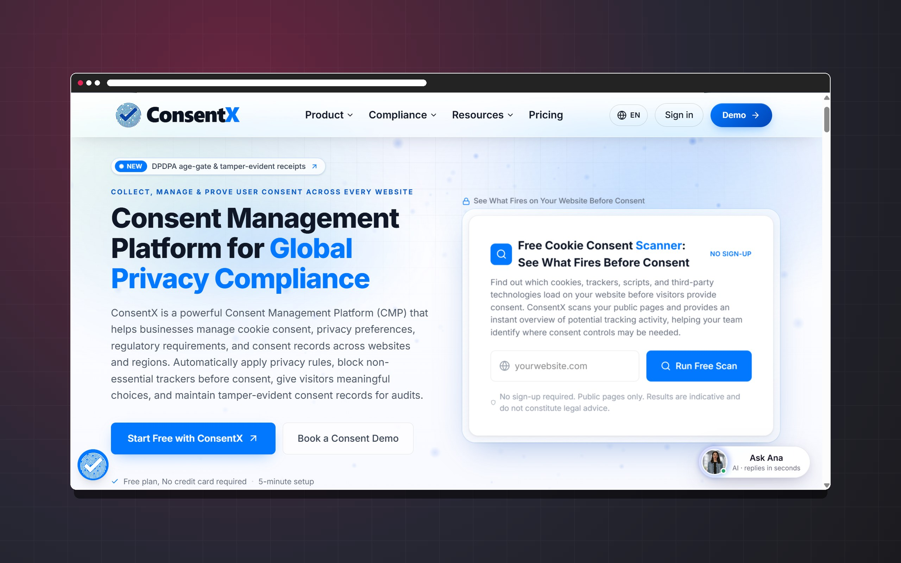

Technical expertise
The Skills Behind Every Digital Solution.
Full Stack Developer · Software Engineer · Freelance Developer
My technical toolkit spans modern web technologies, frontend engineering, backend development, API integration, and software delivery. I focus on building responsive interfaces, reliable application functionality, and maintainable digital solutions that address real-world needs.
My core technology stack.
The technologies I reach for first, across the stack and the toolchain.
- HTML5
- CSS3
- JavaScript
- TypeScript
- React.js
- Next.js
- Node.js
- Python
- REST APIs
- Git
- GitHub
- VS Code
Complete skill set.
Solid = working with · Collapsed = familiar / exploring
Programming Languages & Web Technologies
The languages I write day to day, and the wider set I have had some exposure to.
- JavaScript (ES6+)
- TypeScript
- Python
- SQL
- HTML5
- CSS3
+ 12 familiar / exploring
- Familiar or exploring: Bash / Shell
- Familiar or exploring: Java
- Familiar or exploring: PHP
- Familiar or exploring: C
- Familiar or exploring: C++
- Familiar or exploring: C#
- Familiar or exploring: Go
- Familiar or exploring: Rust
- Familiar or exploring: Ruby
- Familiar or exploring: Swift
- Familiar or exploring: Kotlin
- Familiar or exploring: Dart
Frontend Development
Building responsive, component-driven interfaces that hold up on real devices.
- Semantic HTML5
- CSS3
- Responsive Web Design
- Flexbox & CSS Grid
- DOM Manipulation
- React.js
- Next.js
- Component Architecture
- Reusable UI Components
- State Management (Redux Toolkit)
- Form Handling & Validation
- API Integration
- Tailwind CSS
- Bootstrap
- SEO-Friendly Markup
+ 7 familiar / exploring
- Familiar or exploring: Sass / SCSS
- Familiar or exploring: Material UI
- Familiar or exploring: Accessibility (WCAG)
- Familiar or exploring: Web Performance Optimization
- Familiar or exploring: Vue.js
- Familiar or exploring: Angular
- Familiar or exploring: Svelte
Backend Development
Server-side logic, application structure and the plumbing behind the interface.
- Node.js
- Express.js
- Python
- Django
- Server-Side Development
- Business Logic
- Error Handling
- Request Validation
- Authentication & Authorization
- Serverless Functions
+ 6 familiar / exploring
- Familiar or exploring: Middleware Design
- Familiar or exploring: File Upload Handling
- Familiar or exploring: Background Jobs
- Familiar or exploring: Backend Performance Optimization
- Familiar or exploring: Flask
- Familiar or exploring: FastAPI
API Development & Integration
Designing endpoints that are pleasant to consume, and consuming other people's well.
- REST API Development
- REST API Consumption
- HTTP Methods & Status Codes
- JSON Data Exchange
- Request Validation
- Authentication & Authorization
- Error Handling
- API Documentation (OpenAPI)
- Third-Party API Integration
- API Testing (Postman)
+ 3 familiar / exploring
- Familiar or exploring: Pagination & Filtering
- Familiar or exploring: Webhooks
- Familiar or exploring: GraphQL Fundamentals
Databases & Data Management
Relational data modelling, migrations and keeping stored data trustworthy.
- PostgreSQL
- SQL
- Prisma (ORM)
- Schema Design
- CRUD Operations
- Relationships & Indexing
- Data Validation
- Database Migrations
+ 8 familiar / exploring
- Familiar or exploring: Query Optimization
- Familiar or exploring: MySQL
- Familiar or exploring: SQLite
- Familiar or exploring: MongoDB
- Familiar or exploring: Redis
- Familiar or exploring: Firebase
- Familiar or exploring: Supabase
- Familiar or exploring: Microsoft SQL Server
Full Stack Engineering
I approach full-stack development as an integrated process, connecting user interfaces, server-side logic, APIs, and data storage to deliver cohesive digital products.
- End-to-End Application Development
- Frontend & Backend Integration
- Client-Server Architecture
- Authentication Workflows
- Database Connectivity
- Application State Management
- Form Validation
- Error & Loading States
- Reusable Modules
- Environment Configuration
- Debugging
- Maintainable Architecture
+ 2 familiar / exploring
- Familiar or exploring: File & Media Handling
- Familiar or exploring: Performance Optimization
Software Engineering Fundamentals
The principles underneath the frameworks — some practised daily, some studied.
- Object-Oriented Programming
- Clean Code
- Modular Architecture
- Separation of Concerns
- Code Reuse
- Error Handling
- Debugging
- Technical Documentation
- Code Review
- Problem-Solving
+ 5 familiar / exploring
- Familiar or exploring: Data Structures & Algorithms
- Familiar or exploring: SOLID Principles
- Familiar or exploring: Design Patterns
- Familiar or exploring: System Design Fundamentals
- Familiar or exploring: Agile Development
Testing & Quality Assurance
A year in QA before development — testing is a habit here, not an afterthought.
- Manual Testing
- API Testing
- Regression Testing
- Form & Input Validation
- Browser Compatibility Testing
- Responsive Testing
- Debugging & Error Diagnosis
+ 9 familiar / exploring
- Familiar or exploring: Unit Testing
- Familiar or exploring: Integration Testing
- Familiar or exploring: End-to-End Testing
- Familiar or exploring: Jest
- Familiar or exploring: Vitest
- Familiar or exploring: React Testing Library
- Familiar or exploring: Playwright
- Familiar or exploring: Cypress
- Familiar or exploring: Pytest
Git & Development Workflow
Version control and the day-to-day mechanics of working on a codebase.
- Git
- GitHub
- Version Control
- Branching & Merging
- Pull Requests
- Conflict Resolution
- Code Reviews
- README Documentation
- Package Management (npm)
+ 3 familiar / exploring
- Familiar or exploring: Issue Tracking
- Familiar or exploring: pnpm
- Familiar or exploring: Collaborative Workflows
DevOps, Deployment & Cloud
Getting an application out of localhost and keeping it running.
- Local Development Environments
- Environment Variables
- Build & Deployment Workflows
- Vercel
- Command-Line Tools
- Serverless Deployment
+ 12 familiar / exploring
- Familiar or exploring: Docker
- Familiar or exploring: GitHub Actions
- Familiar or exploring: CI/CD Fundamentals
- Familiar or exploring: Linux Fundamentals
- Familiar or exploring: Netlify
- Familiar or exploring: Application Logging
- Familiar or exploring: Basic Monitoring
- Familiar or exploring: Nginx
- Familiar or exploring: Apache
- Familiar or exploring: AWS
- Familiar or exploring: Microsoft Azure
- Familiar or exploring: Google Cloud Platform
Web Security
Development-level security practice — not a security certification or penetration-testing background.
- Input Validation
- Secure Authentication Practices
- Authorization & Access Control
- Environment Secret Management
- HTTPS
- CORS
- SQL Injection Prevention (parameterised queries / ORM)
+ 5 familiar / exploring
- Familiar or exploring: Password Handling Fundamentals
- Familiar or exploring: XSS Awareness
- Familiar or exploring: CSRF Awareness
- Familiar or exploring: Dependency Updates
- Familiar or exploring: OWASP Fundamentals
Performance & Accessibility
Making pages fast to read and usable by everyone who lands on them.
- Responsive Layouts
- Semantic HTML
- Keyboard Accessibility
- Image Optimization
- Lazy Loading
- Efficient API Requests
- Mobile-First Design
- Readable Typography
+ 5 familiar / exploring
- Familiar or exploring: Accessible Navigation
- Familiar or exploring: Code Splitting
- Familiar or exploring: Rendering Optimization
- Familiar or exploring: Browser Performance Tools
- Familiar or exploring: Core Web Vitals
AI & Automation
Two different things, kept separate: integrating AI into applications, and using AI tooling while building them.
- AI / LLM API Integration
- AI-Assisted Development
- AI-Assisted Debugging
+ 5 familiar / exploring
- Familiar or exploring: Prompt Engineering
- Familiar or exploring: Chatbot Development
- Familiar or exploring: Workflow Automation
- Familiar or exploring: OpenAI API
- Familiar or exploring: Anthropic API
Freelance Development & Client Collaboration
As a freelance developer, I aim to understand each client's goals, recommend practical technical solutions, communicate clearly throughout development, and deliver maintainable websites and applications aligned with the agreed scope.
- Requirement Gathering
- Client Communication
- Project Scoping
- Technical Recommendations
- Project Planning
- Progress Updates
- Feedback Implementation
- Testing & Bug Fixing
- Documentation
- Website Maintenance
+ 5 familiar / exploring
- Familiar or exploring: Task Estimation
- Familiar or exploring: Milestone Planning
- Familiar or exploring: Deployment Coordination
- Familiar or exploring: Technical Handover
- Familiar or exploring: Post-Launch Improvements
How I approach development.
The same five steps, whether it is a landing page or a full application.
- 01
Understand the Problem
Clarify requirements, users, constraints, and desired outcomes.
- 02
Choose the Right Technology
Select tools and frameworks according to project requirements rather than trends alone.
- 03
Build With Quality
Write maintainable code and develop responsive, accessible interfaces.
- 04
Test and Improve
Validate key workflows, fix issues, and refine application performance.
- 05
Deliver and Maintain
Support deployment, documentation, and agreed post-launch improvements.
Skills in practice.
All projectsWhere these technologies actually meet — frontend, backend, APIs and data in one running product.
